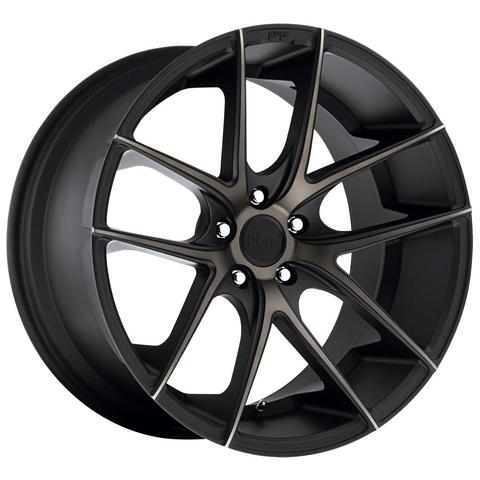

Rines Ford
Caracteristicas
Magnesio:
Estos rines son similares a los de aluminio, pero con mayor resistencia y ligereza, siendo que no se doblan con facilidad, y precisamente por sus propiedades se vuelven más caros, no se recomienda utilizarse en camino y carreteras de terracería porque tienden a oxidarse. Se utiliza en coches de carrera.
Aleación:
Los rines están hechos de una combinación de aluminio y otro metal, por ejemplo de magnesio, son rines de buena calidad por las características de los elementos combinados, pero debido a su producción son más costosos, suelen ser resistentes y ligeros. Se encuentras en coches de gama media alta y de lujo.
